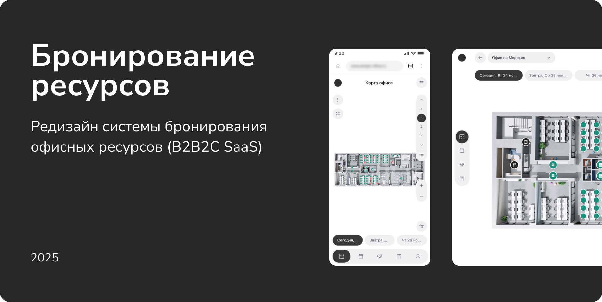
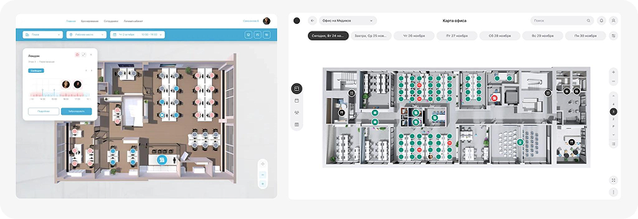
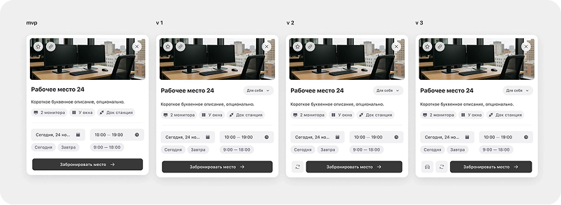
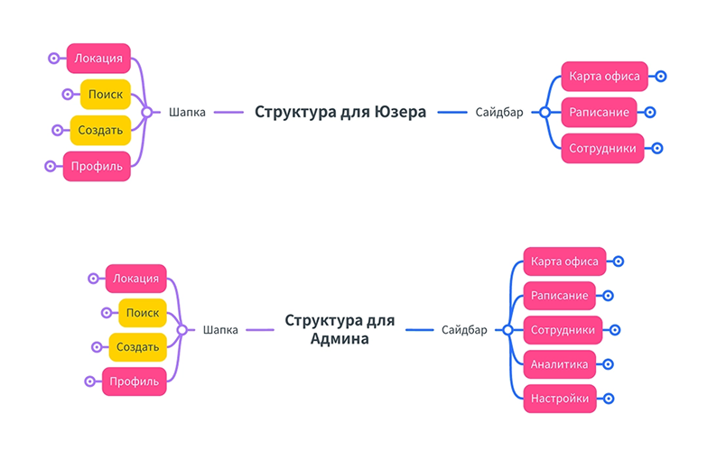
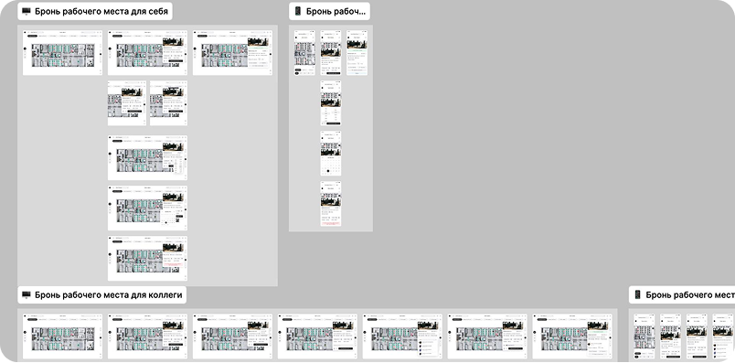

Бронирование ресурсов
Редизайн системы бронирования офисных ресурсов (B2B2C SaaS)
Контекст
Система бронирования рабочих мест, переговорных и других офисных ресурсов для компаний.
Роли: сотрудники, администраторы.
Поставлялась как SaaS и On-Premise решение.

Проблема бизнеса
Продукт с годами потерял актуальность и начал проигрывать рынку.
Основные проблемы:
- сотрудники компаний, где было внедрено приложение не хотели им пользоваться
- фичи добавлялись слишком медленно, накопился огромный бэклог
- отставание в функционале от конкурентов
Требовался перезапуск с учетом предыдущего опыта и с оглядкой на рынок.
Задача
- максимально облегчить для пользователя путь до брони
- спроектировать структуру, учитывающую дальнейшее развитие
- актуализировать внешний вид
Исследование
Я пользовалась продуктом 4 года
Бронировала места и переговорки, наблюдала за своими коллегами, сталкивалась с фидбеком.
Когда мне поручили его редизайн, я пошла проводить коридорки и узнавать у коллег что их все эти годы больше всего бесило.
Я провела конкурентный анализ
- отсмотрела и разобрала скринкасты конкурентов
- собрала библиотеку интерфейсов конкурентов
- получила доступ к демо нескольких решений
- сравнила функциональность
- на основе информации о клиентах выделила лидеров рынка
Это позволило определить
- недостатки нынешнего продукта
- базовые ожидания пользователей
- реальные UX-стандарты рынка
- функции, которые работают как конкурентные преимущества на демо
Ключевые наблюдения
Пользователи жаловались на большое количество кликов до результата, частые ошибки в выборе времени и даты.
Разная точка начала. Как правило пользователи начинали с ресурса или времени, почти одинаково часто. В редких случаях их интересовали специфические фильтры типа наличия монитора или ВКС.
У конкурентов флоу бронирования начинался по-разному.
Я поняла, что главная проблема была не в визуале, а в темпе прохождения сценариев, и выделила точки роста:
- лишние шаги при бронировании
- неочевидная последовательность действий
- нагроможденность элементов
- неучтенные corner-кейсы (это нам уже ранее подсвечивали заказчики)
- отдельный сервис для админов, никак не связанный с основным сайтом
Продуктовые гипотезы
- Сокращение пути до успешного бронирования и работа с типичными ошибками пользователя снизит фрустрацию и отказы.
- Сценарий бронирования должен быть гибким и подходить для разных ментальных моделей.
- Изменение компоновки элементов в экранах позволит улучшить читаемость, а также создаст пространство для интеграции новых функций.
- Совмещение пользовательского и админского сервисов уберет дублирование функционала.
Решение
1. Сокращение пути до бронирования
Было — линейный сценарий:
дата → время → тип ресурса → ресурс
От пользователя требовалось нажимать на кнопки именно в таком порядке. Отойти от сценария нельзя.
Стало — сценарий от цели:
дата → время → тип ресурса → ресурс
Пользователь имеет возможность начать с чего угодно — ресурс, время или другой фильтр. Выбирает в начале то что ему важнее.
2. Изменение компоновки элементов
Изначально продукт развивался стихийно и простой интерфейс усложнялся за счёт добавления новых модальных окон, которые порой наслаивались друг на друга.
Новый интерфейс спроектирован с учётом существующих функций и бэклога. Отрисовываются вариации как для mvp, так и для будущих релизов.

3. Объединение пользовательского и административного интерфейса
Админка стала расширением пользовательского интерфейса: администратор управляет теми же объектами, которые видит пользователь.
Это решение:
- убрало дублирование логики
- упростило поддержку
- снизило когнитивную разницу между ролями

Тестирование на пользователях
Я собрала группу реальных сотрудников, которые уже пользовались системой, и показала им прототип с новым флоу бронирования.
Сессии проводились модерируемо — часть очно, часть удалённо.
Пользователи выполняли привычные задачи (забронировать рабочее место или переговорную), проговаривая, что ожидают от интерфейса и что пытаются сделать дальше. Я наблюдала, где они останавливаются, теряют контекст или возвращаются назад.

Результат
Пока что этот проект был поставлен на паузу из-за кризисной ситуации в компании. Однако…
Редизайн показал как сделать продукт удобнее для пользователей и подготовить его к дальнейшему развитию:
- Гибкость сценариев бронирования — пользователи могут начинать с того, что для них важнее: ресурс, дата или время. Линейные ограничения убраны.
- Упрощение ролей — админка стала естественным продолжением пользовательского интерфейса, уменьшив когнитивную нагрузку и дублирование логики.
- Чистый и понятный интерфейс — улучшена читаемость, логика действий стала очевидной, а структура экранов готова к расширению.
- Основа для будущих функций — новый макет позволяет внедрять дополнительные возможности без перестройки существующих сценариев.